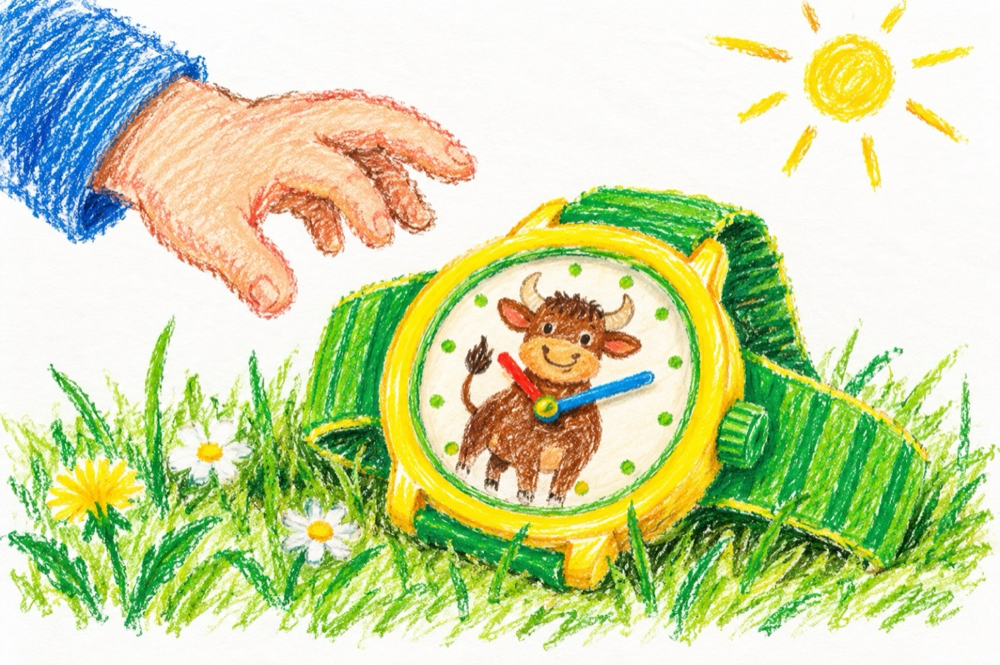

Ceasul nimănui
Am găsit astăzi un ceas
E din plastic sau din aur
Dacă mai făceam un pas
Călcam pe cadran un taur.
E un ceas cred de cowboy,
Pictat cu galben și verde
O fi poate de război?
Inamicul nici nu-l vede.
Are la curea o plombă,
E-un sigiliu mi se pare
Poate-o fi cumva o bombă
De îl calci în aer sare!
Sare dar nu singurel
Îi poți deveni părtaș,
Te ia sus în cer cu el
Și te face îngeraș!
Măi să fie, măi să fie
Uitându-mă mai atent
Este un ceas jucărie
Și-are taurul antet
Nu-i din aur, ci-i din plastic,
Curelușa-i din elastic,
Sigiliul e marca lui
Ceasul, e al nimănui!
Și fiindc-am avut noroc
O să-l iau ca să mă joc!
Vasile Groza